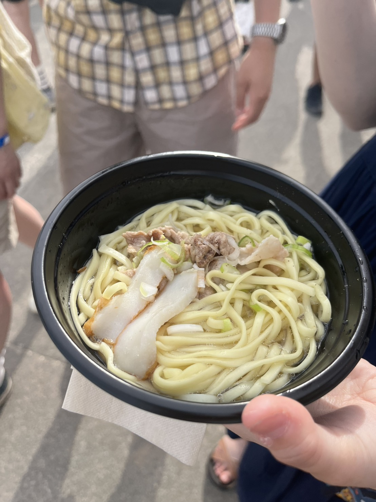

週刊東山通信 第15回「森、道、市場」の感想投稿日：2026年6月4日 ｜ 執筆：菊地 こんにちは、菊地です。 つらつら、各出演者についての感想を読んでみましょう！ ① VMO 2023年、初めて森道に行ったときに衝撃を受けたグッドガイズ再来👀❗️ そして、緩急の付け方が非常に上手い！綿密なライブメイキング計画ゆえに、40分のステージといえども、飽きることなく魅せられました。 ②きゃりーぱみゅぱみゅとにかくライブうますぎて、これがプロフェッショナルかっ……！と感じました👀✨ もちろん、曲の知名度があるのが強いというのもありますが、そのアドバンテージがフル活用されれば、まさに鬼に金棒。ご本人とダンサーとの休憩のタイミングが調整されていることにより、一秒も演出が途切れず、一ミリも心が離れませんでした。さながらフォレスト・ガンプを彷彿させるテンポの良さ。やっぱりさ、曲単体の良さも大切ですけど、ライブ全体の流れ、これが重要。名シーンだけを繋げても、いい脚本にはならないっつーことですよ😳 ③柳瀬白瀬柳瀬白瀬と言っているだけで、2人とは限らないですよね…と思っていたら、本当にファルコンマンさんも参加されていました👀 爆音を武器とするbetcover!!に対し、この日は終始、静寂を支配。張り詰めた緊張を一切緩和させないことで、より高次の緊張が生じる。小さな音こそが最大の音であるように感じさせる、そんな緊張感。そして、普段からショーに使われているステージという事実も作用したのでしょうか、3人の演奏はまさに映画そのもの。次の展開を予感させ、裏切り、ときに笑わせ、ときにギョッとさせる。ライブを曲々の群体でなく、ライブという一つの生物、流れとして捉えているから為せる技なのでしょう。とってもハイテンションでハッピーな気持ちになりました❗️ ④レテ 去年トルーパーが出演したときも思いましたが、面識ある方々が森道のステージで演奏しているのを観聴きするのは、やはり嬉しい気持ちになりますね❣️ ⑤八重山そば海沿いの方に出店していた八重山そばが美味しかったですね〜👍 さっぱり麺が大好きなので。それ繋がりで言えば、韓国冷麺の店ってあるんですかね？なければ、出店願います！  以上、感想でした。 菊地 |
💬 コメント
コメントを投稿する
※お名前は自由に設定できます。コメントはちいかわ風に変換されます。